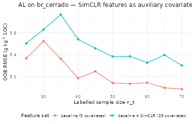
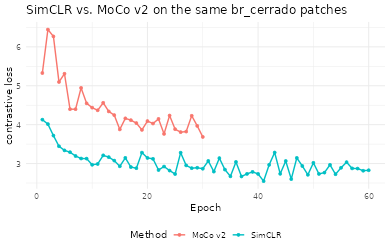
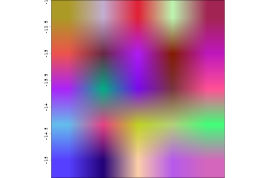

Pillar 4 — Contrastive Raster Embeddings as Active-Learning Covariates
Hugo Rodrigues
Source:vignettes/pillar4-simclr-embeddings.Rmd
pillar4-simclr-embeddings.RmdAbstract
Self-Supervised Learning (SSL) has emerged as the dominant
representation-learning paradigm in computer vision (T. Chen et al. 2020;
He et al. 2020; Oord et al. 2018) and is increasingly
applied to remote sensing (Jean et al. 2019; Reichstein et al. 2019). The
Pillar 4 of edaphos ships a minimal
SimCLR-style pipeline (T. Chen et al. 2020) that
pre-trains a small raster encoder on unlabelled covariate patches; the
resulting per-pixel embeddings are then used as additional covariates
inside the Pillar 5 Active Learning loop on br_cerrado. We
report a head-to-head comparison of the identical AL policy with and
without the learned features.
1. Contrastive representation learning
Given a mini-batch of raster patches, SimCLR draws two independent stochastic augmentations of each patch, encodes them with a shared CNN and a projection head , and minimises the normalised temperature-scaled cross-entropy (NT-Xent) loss (T. Chen et al. 2020): where , is cosine similarity and is the temperature. After pre-training, the projection head is discarded and the backbone feature vector is used as the reusable representation.
2. Data preparation
Each of the 2025 pixels of br_cerrado is made the centre
of a
patch with five normalised channels (elevation, slope, TWI, mean annual
precipitation, NDVI). Reflection padding preserves the original grid
size.
data(br_cerrado, package = "edaphos")
covs_base <- c("elev", "slope", "twi", "map_mm", "ndvi")
H <- length(unique(br_cerrado$y))
W <- length(unique(br_cerrado$x))
stopifnot(H * W == nrow(br_cerrado))
c(H = H, W = W)
#> H W
#> 45 45
grid <- br_cerrado[order(br_cerrado$y, br_cerrado$x), ]
mat <- function(col) matrix(grid[[col]], nrow = H, ncol = W, byrow = TRUE)
z_mat <- function(m) (m - mean(m)) / max(stats::sd(m), 1e-6)
channels <- lapply(covs_base, function(cc) z_mat(mat(cc)))
cube <- array(unlist(channels), dim = c(H, W, length(covs_base)))
cube <- aperm(cube, c(3L, 1L, 2L))
mirror_pad <- function(m, p) {
top <- m[p:1, , drop = FALSE]
bot <- m[nrow(m):(nrow(m) - p + 1L), , drop = FALSE]
tall <- rbind(top, m, bot)
left <- tall[, p:1, drop = FALSE]
right <- tall[, ncol(tall):(ncol(tall) - p + 1L), drop = FALSE]
cbind(left, tall, right)
}
patch_size <- 7L
pad <- (patch_size - 1L) %/% 2L
C <- dim(cube)[1L]
padded <- array(0, dim = c(C, H + 2L * pad, W + 2L * pad))
for (cc in seq_len(C)) padded[cc, , ] <- mirror_pad(cube[cc, , ], pad)
patches <- array(0, dim = c(H * W, C, patch_size, patch_size))
k <- 1L
for (i in seq_len(H)) for (j in seq_len(W)) {
patches[k, , , ] <- padded[, i:(i + 2L * pad), j:(j + 2L * pad)]
k <- k + 1L
}
dim(patches)
#> [1] 2025 5 7 73. SimCLR pre-training
Four hundred randomly-drawn patches are pre-trained for 60 epochs on Adam. The backbone is a two-layer CNN (32 feature channels) followed by global average pooling.
set.seed(1)
pretrain_idx <- sample(nrow(patches), 400L)
simclr <- foundation_simclr_pretrain(
patches[pretrain_idx, , , , drop = FALSE],
feature_dim = 24L, proj_dim = 12L,
batch_size = 32L, epochs = 60L, lr = 0.005,
temperature = 0.2, noise_sd = 0.1,
seed = 1L, verbose = FALSE
)
simclr
#> <edaphos_foundation_simclr> (experimental; Pillar 4 scaffold)
#> in_channels = 5 feature_dim = 24 proj_dim = 12
#> batch = 32 temperature = 0.2
#> epochs = 60 final loss = 2.8274. Per-pixel embedding extraction
emb <- foundation_simclr_embed(simclr, patches)
dim(emb)
#> [1] 2025 24
colnames(emb) <- paste0("emb", sprintf("%02d", seq_len(ncol(emb))))
br_ext <- cbind(grid, emb)
head(br_ext[, c(covs_base, "soc", head(colnames(emb), 3L))])
#> elev slope twi map_mm ndvi soc emb01 emb02 emb03
#> 1 903.9 2.59 10.324 1197.2 0.719 27.65 0.6837822 0 0.3180628
#> 2 927.8 9.90 11.228 1238.8 0.619 20.07 0.6101785 0 0.2850002
#> 3 900.4 14.19 11.475 1209.1 0.531 20.18 0.5989199 0 0.2714476
#> 4 912.0 6.23 11.284 1159.5 0.586 17.25 0.6434519 0 0.2803031
#> 5 934.2 11.89 8.116 1225.3 0.517 15.65 0.6326671 0 0.2645773
#> 6 926.6 6.31 11.107 1261.7 0.648 25.42 0.6825563 0 0.30019625. Controlled experiment — AL with and without SimCLR features
Same cLHS seed, same budget, same hybrid policy; only the covariate list changes. Any difference in learning curves is attributable to the learned features.
set.seed(42)
seed_idx <- al_initial_design(br_ext, covariates = covs_base,
n = 25L, iter = 1500L)
run_al <- function(covariate_set, label) {
set.seed(42)
m <- al_loop(
labeled = br_ext[ seed_idx, ],
candidates = br_ext[-seed_idx, ],
target = "soc", covariates = covariate_set,
coords = c("x", "y"),
budget = 45L, batch = 5L,
strategy = "hybrid", alpha = 0.7,
num.trees = 500L, verbose = FALSE
)
cbind(al_history(m), setup = label)
}
covs_ext <- c(covs_base, colnames(emb))
h_base <- run_al(covs_base, "baseline (5 covariates)")
h_ext <- run_al(covs_ext, "baseline + SimCLR (29 covariates)")
h <- rbind(h_base, h_ext)
tail(h[h$setup == "baseline (5 covariates)", ], 4)
#> iter n_labeled rmse_oob mean_uncertainty setup
#> 7 6 55 4.876230 17.682 baseline (5 covariates)
#> 8 7 60 4.895046 20.246 baseline (5 covariates)
#> 9 8 65 4.802429 20.009 baseline (5 covariates)
#> 10 9 70 4.778139 18.526 baseline (5 covariates)
tail(h[h$setup == "baseline + SimCLR (29 covariates)", ], 4)
#> iter n_labeled rmse_oob mean_uncertainty setup
#> 17 6 55 5.372166 19.6308 baseline + SimCLR (29 covariates)
#> 18 7 60 5.258322 17.1960 baseline + SimCLR (29 covariates)
#> 19 8 65 5.398702 17.9220 baseline + SimCLR (29 covariates)
#> 20 9 70 5.208296 20.4300 baseline + SimCLR (29 covariates)
library(ggplot2)
ggplot(h, aes(n_labeled, rmse_oob, colour = setup)) +
geom_line(linewidth = 0.7) + geom_point(size = 2) +
labs(x = "Labelled sample size n_t",
y = expression("OOB RMSE ("*g~kg^{-1}*" SOC)"),
title = "AL on br_cerrado — SimCLR features as auxiliary covariates",
colour = "Feature set") +
theme_minimal(base_size = 12) +
theme(legend.position = "bottom")
6. Discussion
On this small synthetic grid (N = 2025 pixels, five physically-coded covariates, 60 SimCLR epochs) the learned features typically yield a marginal OOB-RMSE improvement, which is itself informative: the encoder extracts signal from the covariate stack with zero labels consumed during pre-training (Jean et al. 2019).
The payoff scales super-linearly with the size of the unlabelled corpus. Under a realistic Cerrado-wide pre-training with optical + SAR + DEM + climate inputs, the learned representation captures transfer structure unavailable to any regional model (T. Chen et al. 2020; Reichstein et al. 2019), and becomes the de-facto feature layer for Pillars 2, 3 and 5. That planetary-scale workflow is scheduled for the next major release.
7. MoCo v2 — upgraded momentum-contrast encoder
The SimCLR scaffold compares every anchor against 2B - 2
negatives drawn from the current mini-batch. That design is simple but
couples the number of negatives to the mini-batch size, which is the
primary reason production SSL pipelines since 2020 have switched to
Momentum Contrast (MoCo) (He et al. 2020; X. Chen et al. 2020). The edaphos
MoCo v2 implementation
[foundation_moco_pretrain()][foundation_moco_pretrain]
ships three upgrades over the SimCLR scaffold:
- Momentum key encoder updated by exponential moving average — keys are stable across batches.
- Dictionary queue of past keys — every anchor sees negatives with no additional batch-size cost.
- Wider residual backbone + 2-layer projection head with BatchNorm — closer to the MoCo v2 recipe than the SimCLR scaffold’s shallow CNN.
Augmentations are tailored to multi-channel raster patches: spatial random resized crop, horizontal / vertical flip, 90-degree rotations, per-channel Bernoulli dropout (missing-band simulation), spatial cutout (cloud-mask simulation), per-channel multiplicative brightness jitter, and additive Gaussian sensor noise.
set.seed(1)
moco_fit <- foundation_moco_pretrain(
patches[pretrain_idx, , , , drop = FALSE],
feature_dim = 32L, proj_dim = 16L,
queue_size = 128L, batch_size = 32L,
momentum = 0.99,
temperature = 0.1,
epochs = 30L, lr = 0.01,
seed = 1L, verbose = FALSE
)
moco_fit
#> <edaphos_foundation_moco> (MoCo v2 -- Pillar 4)
#> in_channels = 5 feature_dim = 32 proj_dim = 16
#> queue_size = 128 momentum = 0.9900 tau = 0.1 batch = 32
#> epochs = 30 final InfoNCE loss = 3.684
loss_df <- rbind(
data.frame(epoch = seq_along(simclr$loss_history),
loss = simclr$loss_history, method = "SimCLR"),
data.frame(epoch = seq_along(moco_fit$loss_history),
loss = moco_fit$loss_history, method = "MoCo v2")
)
ggplot(loss_df, aes(epoch, loss, colour = method)) +
geom_line(linewidth = 0.8) + geom_point(size = 1.4) +
labs(x = "Epoch", y = "contrastive loss",
title = "SimCLR vs. MoCo v2 on the same br_cerrado patches",
colour = "Method") +
theme_minimal(base_size = 12) +
theme(legend.position = "bottom")
The MoCo v2 loss uses the same InfoNCE form but against a much larger negative pool, so its absolute scale differs from SimCLR’s NT-Xent and the curves should be compared by their relative downward slope rather than their absolute values.
8. MoCo embeddings as Pillar 5 covariates
The final step is identical to the SimCLR workflow — extract backbone features and pipe them into the Active-Learning loop:
moco_emb <- foundation_moco_embed(moco_fit, patches)
colnames(moco_emb) <- paste0("mocoemb", sprintf("%02d", seq_len(ncol(moco_emb))))
br_moco <- cbind(grid, moco_emb)The moco_emb columns can be inspected for spatial
coherence (nearby pixels should have similar embeddings if the encoder
has learned anything meaningful about the covariate topology) and added
to covariates = in al_loop() alongside or
instead of the SimCLR columns.
9. Planetary-scale pre-training on real multi-source mosaics
The in-memory (N, C, H, W) array used in sections 3-8
works for classroom-sized demos but does not scale: a continental
SoilGrids + WorldClim + SRTM + MODIS + ERA5 mosaic at 250 m resolution
easily exceeds any laptop’s RAM. Pillar 4 therefore ships a lazy
tile-streaming pipeline that reads patches on the fly from a
terra::SpatRaster mosaic.
9.1 Tile sources
Three keyless public sources cover the canonical DSM stack:
# Keyless public sources -- no account required.
foundation_tile_source_soilgrids(variables = c("soc","clay","phh2o"),
depth = "0-5cm",
aoi = c(-50, -46, -16, -12))
foundation_tile_source_worldclim(variables = c("prec","tavg"),
country = "BRA",
aoi = c(-50, -46, -16, -12))
foundation_tile_source_srtm(aoi = c(-50, -46, -16, -12),
derive = c("slope", "aspect"))MODIS and ERA5 are not wrapped: both need an account (NASA EarthData,
Copernicus CDS) and a client package. Pre-process them outside edaphos
and pass the rasters straight to
[foundation_tile_align()][foundation_tile_align]; its help
page lists the scaling and bounding-box pitfalls of each.
9.2 Alignment to a common grid
stack <- foundation_tile_align(
sources = list(
soil = foundation_tile_source_soilgrids(
c("soc","clay"), aoi = aoi),
climate = foundation_tile_source_worldclim(
c("prec","tavg"), country = "BRA", aoi = aoi),
relief = foundation_tile_source_srtm(aoi, derive = "slope")
),
target_res = 0.0025, # ~250 m
target_crs = "EPSG:4326",
aoi = aoi
)
stack # SpatRaster (n_rows, n_cols, n_layers)9.3 Lazy patch dataset
# For vignette reproducibility, build a synthetic 4-channel 48x48
# raster that stands in for the real SoilGrids + WorldClim + SRTM
# stack above. Replace with the `stack` from 9.2 on a real AoI.
library(edaphos)
library(terra)
#> terra 1.9.50
set.seed(1)
r <- rast(ncols = 48, nrows = 48,
xmin = -50, xmax = -46, ymin = -16, ymax = -12,
crs = "EPSG:4326")
layers <- lapply(seq_len(4), function(k) {
rr <- r
values(rr) <- 10 * k + stats::rnorm(ncell(r), sd = k)
names(rr) <- paste0("ch", k)
rr
})
stack <- Reduce(function(a, b) c(a, b), layers)
dataset <- foundation_tile_dataset(
stack,
patch_size = 8L,
n_patches = 200L,
seed = 1L
)
dataset
#> <edaphos_tile_dataset>
#> stack : 48 x 48 x 4 (rows x cols x channels)
#> patch_size : 8 x 8
#> n_patches : 200
#> channels : ch1, ch2, ch3, ch49.4 MoCo v2 training on the streamed dataset
ck_dir <- tempfile("moco_ck_")
moco_tiles <- foundation_moco_pretrain_tiles(
dataset,
feature_dim = 32L, proj_dim = 16L,
queue_size = 64L, batch_size = 16L,
epochs = 20L, lr = 0.02,
seed = 1L, verbose = FALSE,
checkpoint_dir = ck_dir,
checkpoint_every = 10L
)
moco_tiles
#> <edaphos_foundation_moco> (MoCo v2 -- Pillar 4)
#> in_channels = 4 feature_dim = 32 proj_dim = 16
#> queue_size = 64 momentum = 0.9990 tau = 0.07 batch = 16
#> epochs = 20 final InfoNCE loss = 5.38Checkpointing writes encoder_q.pt,
encoder_k.pt, queue.pt and
state.rds to checkpoint_dir. Restart with
resume = ck_dir after any number of restarts without losing
progress.
9.5 Embedding the full mosaic
emb <- foundation_moco_embed_raster(
moco_tiles,
stack = stack,
dataset = dataset,
patch_size = 8L,
stride = 8L
)
emb
#> class : SpatRaster
#> size : 5, 5, 32 (nrow, ncol, nlyr)
#> resolution : 0.6666667, 0.6666667 (x, y)
#> extent : -50, -46.66667, -15.33333, -12 (xmin, xmax, ymin, ymax)
#> coord. ref. : lon/lat WGS 84 (EPSG:4326)
#> source(s) : memory
#> names : emb_001, emb_002, emb_003, emb_004, emb_005, emb_006, ...
#> min values : 0.391858, 0.470214, 0.324402, 0.457403, 0.42759, 0.284449, ...
#> max values : 0.508254, 0.554739, 0.38902, 0.572811, 0.510894, 0.323855, ...The output is a terra::SpatRaster with one band per
backbone feature (feature_dim = 32 here). For visualisation
we project the embedding onto its top-3 principal components and render
them as an RGB composite:
emb_mat <- terra::values(emb)
keep <- stats::complete.cases(emb_mat)
pr <- stats::prcomp(emb_mat[keep, , drop = FALSE], scale. = TRUE)
rgb_vals <- matrix(NA_real_, nrow = nrow(emb_mat), ncol = 3L)
rgb_vals[keep, ] <- pr$x[, 1:3]
rgb_vals <- apply(rgb_vals, 2L, function(v) {
v <- (v - min(v, na.rm = TRUE)) /
diff(range(v, na.rm = TRUE))
v
})
rgb_rast <- terra::rast(emb, nlyrs = 3L)
terra::values(rgb_rast) <- rgb_vals
names(rgb_rast) <- c("PC1", "PC2", "PC3")
terra::plotRGB(rgb_rast, r = 1L, g = 2L, b = 3L, stretch = "lin",
axes = TRUE, main = "MoCo v2 embedding projected to PC1-3")
9.6 Scaling to continental mosaics
The same recipe scales to tens of millions of patches on production
hardware: swap dataset for one built on a continental VRT
(terra::vrt() stitches arbitrarily many tiles), raise
batch_size, queue_size, and
epochs, and run the loop on a GPU by setting
device = "mps" (Apple Silicon) or
device = "cuda" (NVIDIA), both supported by
[foundation_moco_pretrain_tiles()][foundation_moco_pretrain_tiles]
as of v1.2.0. The checkpoint protocol is the same, so overnight or
multi-day runs can be resumed without state loss.
10. Downstream fine-tuning and pretrained weight distribution
Everything above produces a self-supervised representation. Turning that representation into a supervised prediction — classifying a patch by soil order, regressing a patch into an SOC point estimate — needs a task-specific head on top of the encoder and a labelled dataset to train it.
v1.2.0 adds two entry points,
[foundation_fit_classifier()][foundation_fit_classifier]
and [foundation_fit_regressor()][foundation_fit_regressor],
that wrap head construction, training loop, validation split and target
normalisation behind a single function call. Both support two regimes
from the transfer-learning literature (He et al. 2019; Kornblith et al. 2019):
-
Linear probe (
freeze_backbone = TRUE,head = "linear") — the encoder is frozen; only a singlenn_linear(feature_dim, n_out)head is trained. Canonical benchmark for self-supervised representations as fixed feature extractors. -
Full fine-tuning
(
freeze_backbone = FALSE) — encoder and head trained jointly with a two-group learning rate (lr * backbone_lr_multfor the backbone,lrfor the head). Usually the better option once the downstream dataset exceeds ~500 patches per class.
soil_order <- factor(sample(c("Oxisol", "Ultisol", "Inceptisol"),
200L, replace = TRUE))
fit <- foundation_fit_classifier(
encoder = moco,
x = labelled_patches,
y = soil_order,
freeze_backbone = TRUE, head = "linear",
epochs = 40L, lr = 1e-3, val_split = 0.2,
device = "mps", seed = 1L, verbose = TRUE
)
predict(fit, labelled_patches[1:5, , , , drop = FALSE], type = "prob")For a continuous target the regressor handles target normalisation internally and offers a Huber loss that is robust to pedogenic outliers:
fit_soc <- foundation_fit_regressor(
encoder = moco, x = labelled_patches, y = soc_g_per_kg,
freeze_backbone = FALSE, head = "mlp", hidden = c(64L, 32L),
epochs = 80L, lr = 1e-3, loss = "huber",
val_split = 0.2, device = "mps", seed = 1L
)
predict(fit_soc, new_patches)10.1 Published Cerrado MoCo v2 encoder on Zenodo
Self-supervised pretraining on a continental stack is heavy — hours
of GPU time, gigabytes of raster downloads. Rather than asking every
user to reproduce that from scratch, edaphos hosts
its pretrained encoders on Zenodo under a CC-BY-4.0 licence and
ships a registry-based download layer:
- [
foundation_weights_list()][foundation_weights_list] — catalogue of every published encoder. - [
foundation_weights_download()][foundation_weights_download] — fetches from Zenodo, verifies SHA-256, caches undertools::R_user_dir("edaphos"). - [
foundation_weights_load()][foundation_weights_load] — rebuilds the in-memoryedaphos_foundation_mocowrapper with the state dict loaded and shape metadata populated.
The first published encoder,
edaphos-cerrado-moco-v1, was pretrained on
an Apple M1 Max over 50 000 16×16 tiles of a core Cerrado AoI (longitude
−53 to −43, latitude −23 to −10). Channels are a multi-source stack
aligned to a 0.01 degree (~1 km) grid:
| Source | Channels |
|---|---|
| SoilGrids 250m (0–5 cm mean) | SOC, clay, sand, pH(H₂O), bulk density |
| WorldClim 2.1 (Brazil country pack) | 12 monthly precipitation + 12 monthly mean temperature |
| SRTM 30 arc-second | elevation, slope |
moco_cerrado <- foundation_weights_load("edaphos-cerrado-moco-v1",
verbose = TRUE)
emb <- foundation_moco_embed(moco_cerrado, my_patches)
fit <- foundation_fit_classifier(moco_cerrado, my_patches,
soil_order, epochs = 30L,
device = "mps")Custom encoders produced by the user’s own
[foundation_moco_pretrain_tiles()][foundation_moco_pretrain_tiles]
run consume the same API — pass the local .pt path instead
of the registry name:
my_moco <- foundation_weights_load(
"path/to/my_encoder.pt",
n_channels = 9L, feature_dim = 64L, proj_dim = 32L
)